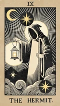

The Hermit Pathway centers on mystical and occult knowledge, with ritual magic, spell and scroll creation, and star-related powers. At higher Sequences, it develops into manipulation of information, knowledge, bodies, number symbolism, hidden existences, and fate; the pathway’s advancement is also endangered by intrusive knowledge associated with the Hidden Sage.
Pathway progression and late-sequence details contain major story spoilers.Overview
The Hermit Pathway centers on mystical and occult knowledge, with ritual magic, spell and scroll creation, and star-related powers. At higher Sequences, it develops into manipulation of information, knowledge, bodies, number symbolism, hidden existences, and fate; the pathway’s advancement is also endangered by intrusive knowledge associated with the Hidden Sage.
Paraphrased from the Fandom pathway article..
Complete wiki information
Full main-article information imported from the Hermit Pathway wiki article. Existing archive pathway details above are preserved.
The Mystery Pryer pathway is different from other pathways. From time to time, it will be chased by a large amount of knowledge. It’s impossible to ignore, and there’s no way to reject it even if one can’t handle it. And when one consumes a potion to advance, the situation of being chased by knowledge becomes even more serious.
Overview
The Hermit Pathway seems to specialize in knowledge of the mystical and occult world. They have good ritual magic abilities, cast various spells and make scrolls with corresponding materials, as well as conjure and manipulate stars.
At High-Sequences, they can see and hear hidden existences easily, extract powers from mystical knowledge, and foresee the woven of fate; they become information themselves; they can modify their bodies, bring power to knowledge, instill knowledge upon the minds of others, and manipulate the symbolisms of number, thus bring all sorts of strong and terrifying effects.
The pathway was controlled by the Hidden Sage, which often makes the situation of Beyonders of this pathway tragic as "He" routinely whispers knowledge into their ears, especially during their Sequence advancement. Failing to assimilate the knowledge will either turn you into a raving lunatic or an outright monster. According to Aurore, 99% of the Knowledge Pursuit comes from the Hidden Sage.[2][3] "He" doesn't have a ridiculous level of malicious intent towards members of the Moses Ascetic Order, it is relatively safe for them to listen to "Him," but even Cattleya who is one of them would have lost control if The Fool didn't save her.[4]
The Above the Sequence of the Hermit Pathway is the Demon of Knowledge, and the corresponding Sefirah is the Knowledge Moor.
Sequence Levels
Pathway Symbol
The official symbol of the Hermit Pathway.[5]
A pair of eyes that contained countless resplendent stars. They were cold and indifferent, and they lacked eyelashes.[6]
Corresponding Tarot Card

The corresponding tarot card of the Hermit Pathway is The HermitSimplified Chinese: 隐者.[7][8]
The Hermit (IX) is the ninth card of Major Arcana. The Hermit is the "withdrawal from events and relationships to introspect and gather strength". Seeking the inner voice or calling upon vision from within. A need for understanding and advice, or a wise person who will offer knowing guidance. A card of personal experience and thoughtful temperance.[9]
Corresponding Ingredients
Browse the local Hermit Pathway ingredient archive →
Mythical Creature Form
An informational being that resembles a giant serpent or eyeballs.[10][11]
Neighboring and Compatible Pathways
Neighboring Pathways to the Hermit Pathway include:
- Other Pathways under the Demon of Knowledge:

Compatible Pathways to the Hermit Pathway include, but might not be limited to, the following:
- Pathways under the Inextinguishable Ravings:

- Pathways under the Supernova Dominator:
- Pathways under the High-Dimensional Overseer:
- Pathways under the Primordial Hunger:


Non-Adjacent Pathways with Hidden Neighbouring Relationship to the Hermit Pathway include, but might not be limited to, the following:
- Some Pathways under the God Almighty:
Sequence progression
Sequence titles are retained from the archive; key ability notes are concise paraphrases of the linked source material.
| Seq. | Name | Key abilities |
|---|---|---|
| 9 | Mystery Pryer | Uses special eyes, ritual and divination magic, spirit contracts, quick rituals, and endures unpredictable Knowledge Pursuit. |
| 8 | Melee Scholar | Physical enhancement and Combat Prying grant broad mastery of many martial-arts styles. |
| 7 | Warlock | Creates versatile spells from mystical knowledge and materials; enhanced prying reveals supernatural powers and enables new spells. |
| 6 | Scrolls Professor | Creates scrolls that quickly release prepared spells for communication, elemental attacks, healing, purification, and movement. |
| 5 | Constellations Master | Manipulates starlight and constellations for cages, destructive pillars, concealment, travel, bridges, illumination, and stellar transformation. |
| 4 | Mysticologist | Uses Mystical Re-enactment to draw power from esoteric knowledge and events, while enhanced eyes detect concealed realities. |
| 3 | Clairvoyant | Gains partial Mystery Prying authority, enabling prophecy, fate glimpses, past visualization, and stronger mystical re-enactment. |
| 2 | Sage | Becomes information and manipulates, deletes, revises, materializes, and weaponizes knowledge through an Education authority. |
| 1 | Knowledge Emperor | Imbues knowledge with tangible power, manipulates information streams, creates digital avatars, and extends prophecy and education. |
| 0 | Hermit | Embodies mystical knowledge with number symbolism, hiding, copying, deletion, revision, and direct knowledge infusion across the pathway. |
Pathway themes & abilities
Its recurring themes are mystery-prying, divination, ritual magic, spellcraft, scrollcraft, mystical re-enactment, clairvoyance, information/knowledge manipulation, and star or number symbolism. High-Sequence abilities turn learned mystical knowledge into practical power, including information-form bodies, knowledge attacks, prophecy, concealment, and reality-affecting symbolic effects.
Sequence-specific highlights are shown in the progression table above.
High-sequence abilities
The upper Sequences change the pathway from a specialist discipline into a domain of angelic and divine authority. The highlights below summarize the progression from Sequence 4 upward; details contain major spoilers.
Sequences 4–3
- Sequence 4 — Mysticologist: Uses Mystical Re-enactment to draw power from esoteric knowledge and events, while enhanced eyes detect concealed realities.
- Sequence 3 — Clairvoyant: Gains partial Mystery Prying authority, enabling prophecy, fate glimpses, past visualization, and stronger mystical re-enactment.
Sequences 2–1
- Sequence 2 — Sage: Becomes information and manipulates, deletes, revises, materializes, and weaponizes knowledge through an Education authority.
- Sequence 1 — Knowledge Emperor: Imbues knowledge with tangible power, manipulates information streams, creates digital avatars, and extends prophecy and education.
Sequence 0
- Sequence 0 — Hermit: Embodies mystical knowledge with number symbolism, hiding, copying, deletion, revision, and direct knowledge infusion across the pathway.
Sequence highlights are paraphrased from the Lord of the Mysteries Wiki pathway article.
Novel lore & story appearances
Major spoilers for Lord of the Mysteries and Circle of Inevitability. The Hermit pathway’s occult-knowledge pursuit is dangerous: the sentient Hermit Uniqueness called the Hidden Sage feeds knowledge to pathway Beyonders, risking madness; Old Neil and Cattleya show the cost. The Fourth Epoch Moses Ascetic Order, once an ascetic pursuit of knowledge, was corrupted when the Hidden Sage came to life. Roselle Gustav moved from Paragon to Hermit Sequence 1 Knowledge Emperor, then Black Emperor. A later joint campaign killed the Hidden Sage and destroyed the Order, affecting Roselle’s Hermit daughter Bernadette
Story connections
- Knowledge as both pathway burden and supernatural threat: the Hidden Sage’s involuntary knowledge transmissions endanger Hermit Beyonders; Old Neil goes mad, while Cattleya is nearly driven to lose control before the Fool intervenes
- The Order’s rise and fall: the Moses Ascetic Order began in the Fourth Epoch as a knowledge-seeking ascetic group, then became corrupted after its once-abstract Hidden Sage came to life. In 1359, a joint operation involving the Tarot Club and the Steam and Evernight churches destroyed the Order and killed the Hidden Sage
- Roselle’s Hermit connection: Roselle moved from Paragon to Sequence 1 Knowledge Emperor of Hermit, then changed to Black Emperor; his diary also helped steer Klein toward Seer rather than Hermit. Bernadette, Roselle’s daughter and a Hermit Sequence 2 Sage, later advanced with the Fool shielding her from the Hidden Sage
Figures to know
- Hidden SageSentient Hermit Uniqueness and the central source of the pathway’s knowledge intrusions; killed in the later campaign against it
- Old NeilEarly Hermit Beyonder whose encounter with the Hidden Sage ends in madness and his colleagues’ intervention
- CattleyaMoses Ascetic Order member and Hermit Beyonder; the Fool saves her from losing control, and she later becomes involved in investigating the Hidden Sage
- Roselle GustavTransmigrator who reached Hermit Sequence 1 as a Knowledge Emperor after starting in Paragon
- Bernadette GustavRoselle’s daughter, Hermit Sequence 2 Sage and founder of Element Dawn, an organization formed to oppose the Moses Ascetic Order
Major story spoilers. Lore is paraphrased;.
Associated figures
Selected figures listed in the source material:
- Hidden Sage
- Cattleya
- Bernadette Gustav
- Roselle Gustav
- Yuggs Stiano
- Retia Austin
Showing 6 of 9 names listed in the source; this is not an exhaustive roster.